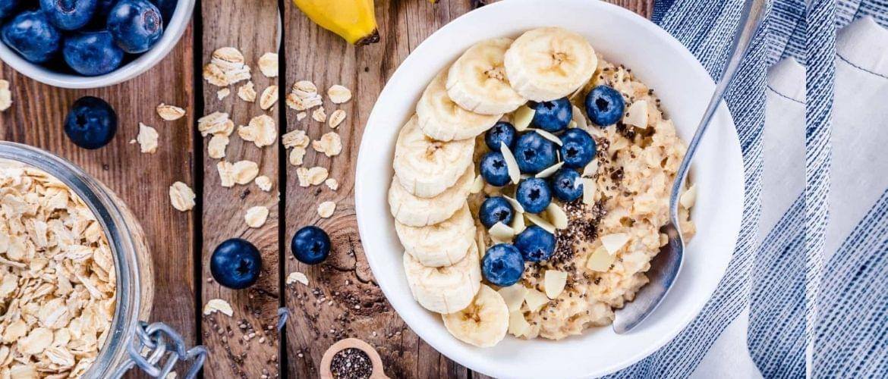

Звичайна вівсянка може бути досить смачним та поживним сніданком. Ось простий рецепт для підготовки вівсянки:
Інгредієнти:
- 1/2 чашки вівсяних пластівців
- 1 чашка води або молока
- 1/4 чайної ложки солі (за бажанням)
- мед, ягоди або фрукти за смаком
Етапи приготування:
- Додайте вівсяні пластівці та сіль в каструлю або сковороду.
- Додайте воду або молоко та поставте на середній вогонь.
- Доведіть до кипіння, після чого знизьте вогонь та дайте вівсянці помалу доваритись протягом близько 5-7 хвилин. Часто помішуйте, щоб вівсянка не пригоріла.
- Після того, як вівсянка відварилась, вимкніть вогонь та залиште її стояти на пару хвилин, щоб дозволити всім смакам злитись разом.
- Додайте мед, ягоди або фрукти за смаком та насолоджуйтеся своїм поживним та смачним сніданком.
Приємного апетиту!